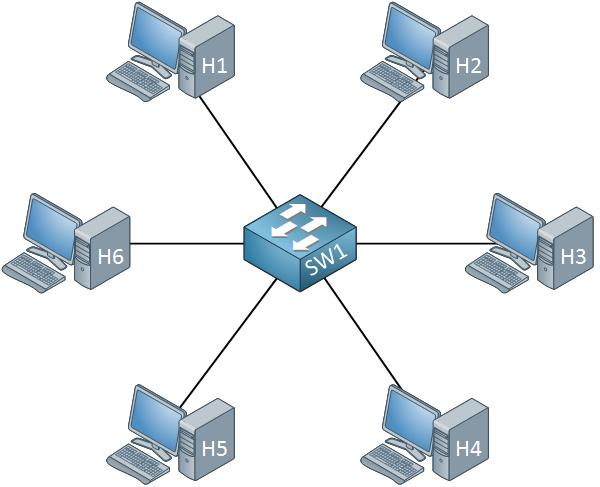
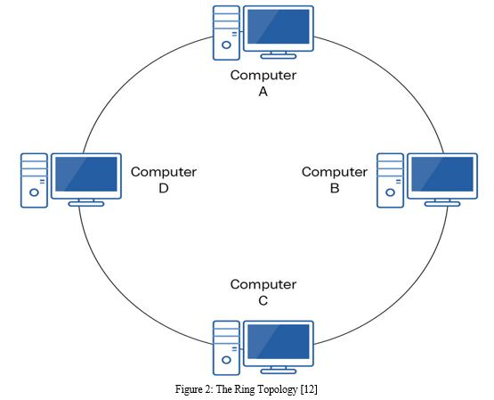
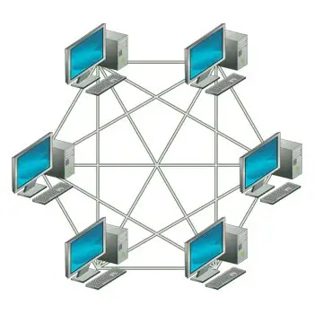
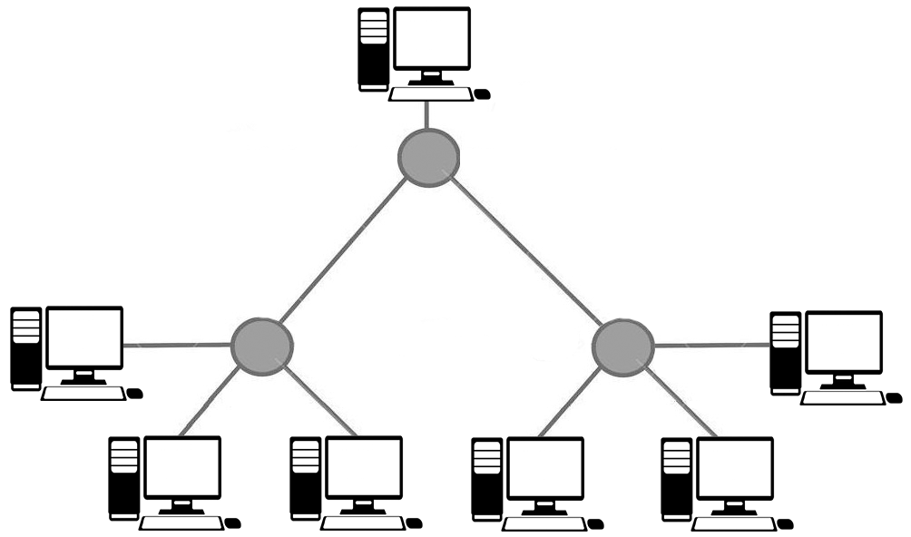
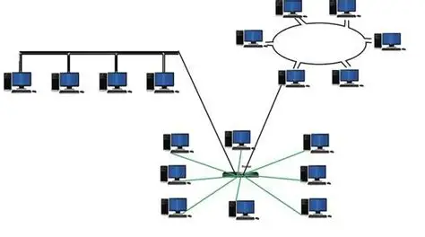
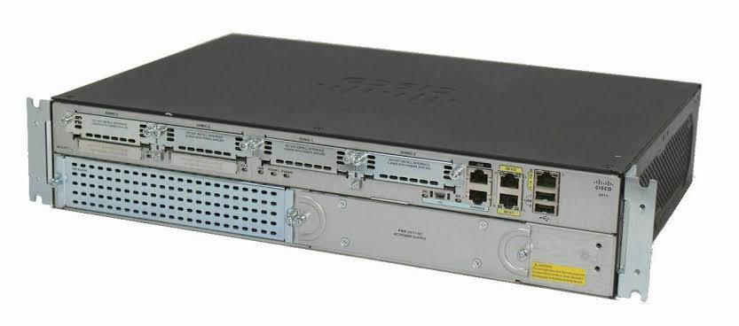
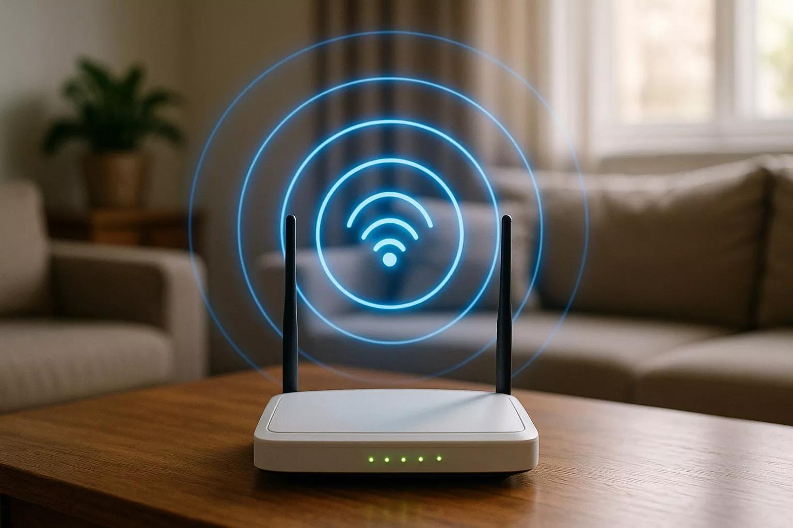

Bienvenido
Bienvenido a este espacio educativo dedicado al estudio de las redes informáticas y las telecomunicaciones. Aquí conocerás los conceptos fundamentales que permiten la conexión y comunicación entre diferentes dispositivos.
Las redes informáticas forman parte de nuestra vida cotidiana. Gracias a ellas podemos navegar por Internet, compartir archivos, realizar videollamadas y acceder a diferentes servicios digitales.
¿Qué son las redes informáticas?
Son conjuntos de dispositivos que estan conectados entre sí que para intercambiar información y compartir recursos, como archivos mediante medios de comunicación o conexiones inalambricas.
¿Qué son las telecomunicaciones?
Son los medios y tecnologías que permiten transmitir información a distancia mediante señales eléctricas, ondas electromagnéticas o señales de luz.
Objetivo de esta página
Explicar los fundamentos de las redes informáticas, identificar sus principales componentes y comprender cómo se realiza la comunicación entre dispositivos.
Topologías de Red
Las topologías de red representan la forma física o lógica en que se organizan y conectan los dispositivos dentro de una red informática. Cada topología tiene características, ventajas y limitaciones.
1. Topología Bus
Todos los dispositivos se conectan a un único cable principal por donde se transmiten los datos. Es una estructura sencilla, pero una falla en el cable principal puede afectar la comunicación de toda la red.

2. Topología Estrella
Todos los dispositivos se conectan a un equipo central, generalmente un switch. Es fácil de administrar y permite detectar problemas en conexiones individuales.

3. Topología Anillo
Los dispositivos se conectan formando un circuito cerrado. La información circula siguiendo el recorrido establecido entre los equipos.

4. Topología Malla
Los dispositivos cuentan con múltiples conexiones, permitiendo diferentes caminos para transmitir datos. Ofrece varias rutas de comunicación entre los equipos.

5. Topología Árbol
Los dispositivos se organizan mediante una estructura jerárquica, formando diferentes niveles y ramas. Permite organizar redes de mayor tamaño.

6. Topología Híbrida
Combina dos o más tipos de topologías para construir una red informática adaptada a diferentes necesidades.

Dispositivos de Red
Los dispositivos de red son equipos que permiten conectar, organizar y comunicar diferentes elementos dentro de una infraestructura informática.
1. Router (2911)

Conecta diferentes redes y dirige los paquetes de datos hacia su destino. También permite comunicar una red local con otras redes, como Internet.
2. Switch
.jpg)
Conecta diferentes dispositivos dentro de una red local (LAN) y envía la información al equipo correspondiente utilizando direcciones MAC.
3. PC
Es un dispositivo final que permite enviar y recibir información, utilizar aplicaciones y comunicarse con otros equipos de una red.
4. Laptop
Representa una computadora portátil que puede conectarse a una red mediante una conexión cableada o inalámbrica.
Tipos de Conexiones
Las conexiones de red permiten comunicar diferentes dispositivos y transmitir información. Se pueden clasificar principalmente en conexiones cableadas e inalámbricas.
1. Cable Ethernet (UTP)
.png)
Es un cable de cobre utilizado en redes locales. Generalmente utiliza conectores RJ45 para conectar computadoras, switches y routers.
2. Fibra Óptica

Utiliza señales de luz para transmitir información a gran velocidad y a largas distancias. Es muy utilizada en las redes de telecomunicaciones.
3. Cable Coaxial

Transporta señales eléctricas mediante un conductor central protegido por materiales aislantes y una malla metálica. Se utiliza en televisión y otros sistemas de comunicación.
4. Conexión Wi-Fi

Permite conectar dispositivos a una red mediante ondas de radio, sin necesidad de utilizar cables físicos.
5. Cable Ethernet Cruzado

Es un tipo de cable Ethernet que utiliza un orden diferente de conexiones en sus extremos. Se utilizaba tradicionalmente para conectar directamente determinados dispositivos similares.
Protocolos de Red
Los protocolos de red son un conjunto de reglas que permiten que los dispositivos intercambien información de manera organizada. Definen cómo se envían, reciben y procesan los datos.
1. TCP/IP
Es el conjunto de protocolos fundamental para la comunicación en Internet. TCP permite una transmisión confiable de datos, mientras que IP se encarga del direccionamiento y envío de paquetes.
2. HTTP
Es un protocolo utilizado para transferir información entre navegadores web y servidores. Permite acceder al contenido de las páginas web.
3. HTTPS
Es una versión segura de HTTP que utiliza cifrado para proteger la información intercambiada entre el navegador y el servidor.
4. DNS
El Sistema de Nombres de Dominio permite traducir nombres de sitios web, como ejemplo.com, en direcciones IP que los dispositivos pueden utilizar.
5. DHCP
Es un protocolo que asigna automáticamente configuraciones de red a los dispositivos, como direcciones IP, máscaras de subred y puertas de enlace.
6. FTP
Es un protocolo utilizado para transferir archivos entre un cliente y un servidor. Su versión tradicional no cifra la información.
Seguridad en Redes
La seguridad en redes comprende las medidas y tecnologías que permiten proteger los dispositivos, la información y los servicios frente a accesos no autorizados y diferentes amenazas digitales.
1. Firewall (Cortafuegos)
Es un sistema de seguridad que supervisa y controla el tráfico de red según reglas establecidas. Ayuda a bloquear conexiones no autorizadas.
2. Cifrado de Datos
Es un proceso que transforma la información para que solamente las personas o sistemas autorizados puedan comprenderla mediante los mecanismos adecuados.
3. Contraseñas Seguras
Son claves que ayudan a proteger las cuentas y los dispositivos. Es recomendable utilizar contraseñas largas, únicas y difíciles de adivinar.
4. Antivirus
Es un programa que ayuda a detectar, bloquear y eliminar software malicioso que puede afectar el funcionamiento de los dispositivos.
5. Actualizaciones
Mantener actualizados los sistemas y programas permite corregir errores y solucionar vulnerabilidades de seguridad.
Aplicaciones de las Redes
Las redes informáticas están presentes en nuestra vida cotidiana y permiten compartir información, comunicarnos y utilizar diferentes servicios tecnológicos. Su aplicación es importante en diversos sectores.
1. Educación
Permiten acceder a clases virtuales, plataformas educativas, bibliotecas digitales y recursos de aprendizaje desde diferentes lugares.
2. Salud
Facilitan la comunicación entre hospitales, el acceso a información médica digital y el uso de sistemas de atención a distancia.
3. Empresas
Permiten compartir archivos, utilizar sistemas de trabajo, administrar información y conectar diferentes áreas de una organización.
4. Comunicación
Hacen posibles las videollamadas, los mensajes, el correo electrónico y el intercambio de información a través de Internet.
5. Hogares Inteligentes
Permiten conectar televisores, cámaras, celulares, asistentes inteligentes y otros dispositivos a una misma red doméstica.